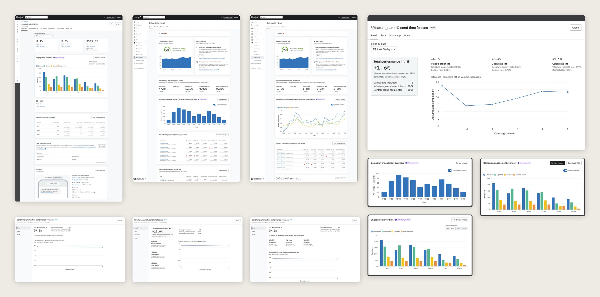
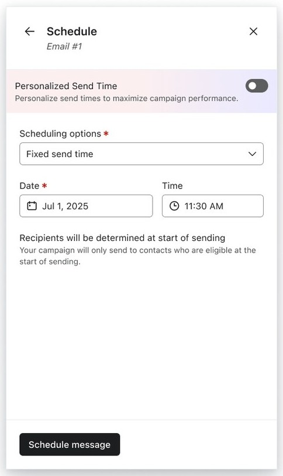
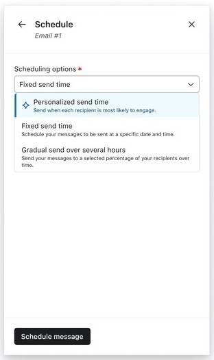
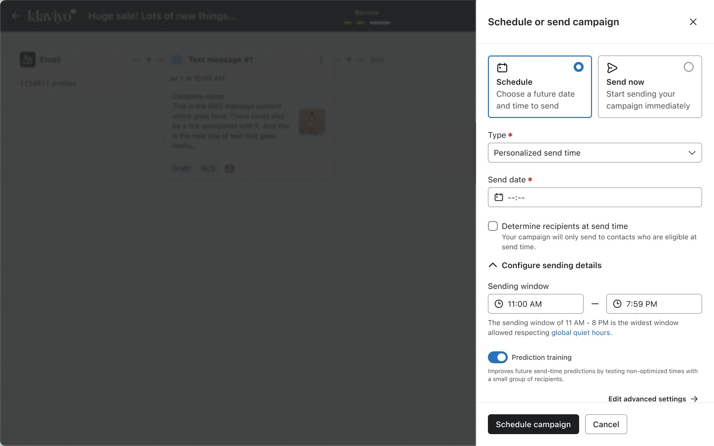
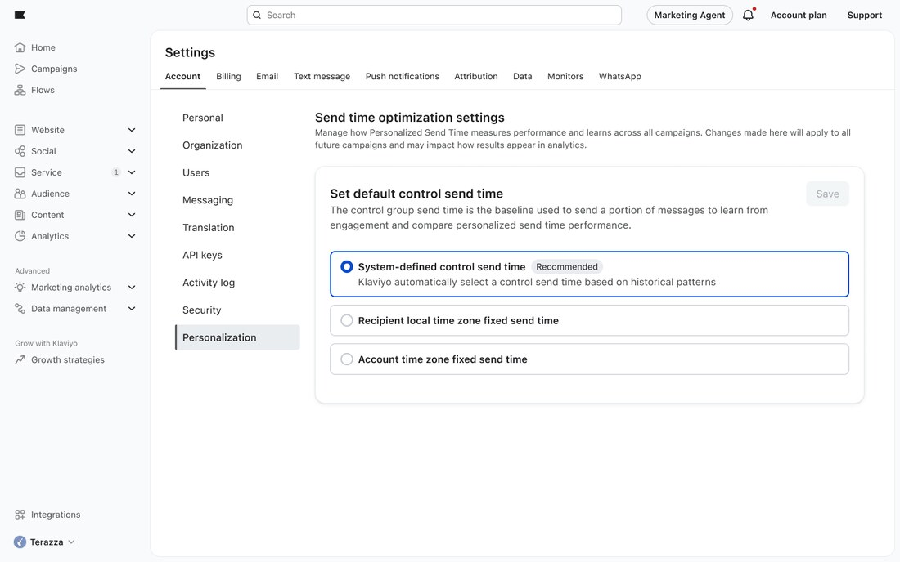
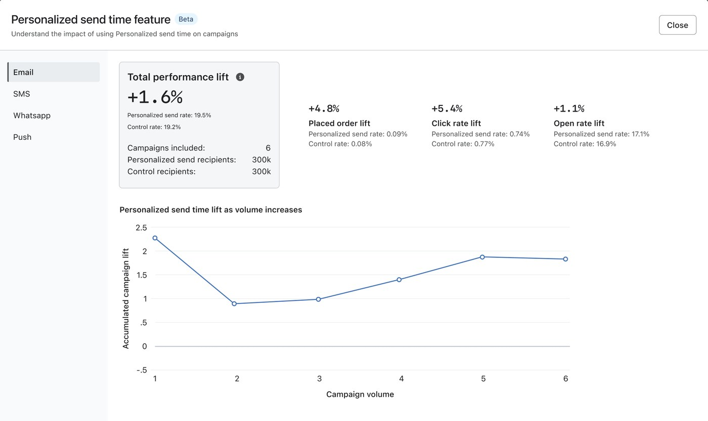

Personalized Send Time
Every message lands at each person’s best hour. Marketers set the window, Klaviyo picks the moment, and a control group shows whether it worked.
The widest window allowed, respecting quiet hours.
01 · Problem
Every way to send treated the list as one audience.
Whatever their time zone or habits, everyone got the same moment.
Sending type
“We were sending everything at a hard 8 a.m. Like, what time is that in the U.K.?”
Marketing lead · DTC brand · Customer call
Why it mattered
Projected sitewide revenue, in the PRD sizing
Anchor of the new Marketing Analytics package
Competitors already sold it: Braze and Attentive
Data science could now predict a best hour per person
How might we
Send each message when each person is most likely to engage, without taking control away from marketers?
02 · Concepts
Prototyping three concepts.
Each gave the marketer a different amount of control, from a recommendation to a toggle on today’s scheduler.
Recipient preference by hour
03 · Research
Usability tests with 5 marketers.
One question across all three concepts: what did they expect Klaviyo to decide?
Loved the recommendation, not the chart.Keep the recommendation, drop the reasoning chart.
They expected Klaviyo to pick the time.Make the window optional.
“I didn’t know this existed.”Move it into the send type.
From choosing a time to defining a window
The marketer owns the boundaries. The model picks each person’s hour inside them.
04 · Trust
Telling the data story.
Beta launched to 85 companies. The first report led with one big number, and customers asked: compared to what? Most of the design came from working out how the data should tell its story.

“I don’t need you to tell me again that it works and break up all my data.”
Marketing lead · DTC brand · Beta feedback
Is the lift real, or just noise?
A few campaigns can swing either way by chance. Each result shows a range of likely lift. If the whole range sits above zero, the lift is unlikely to be chance (95% interval).
The whole range sits above zero. Safe to act on.
Mostly above zero, but it could still be chance. Keep sending.
The range spans zero. Nothing to claim yet.
05 · Experiment
Less prominent, more adopted.
Beta shipped with a banner at the top of the scheduler. After GA, we tested it against an option inside the dropdown marketers already use, 50/50 by company, built to catch a drop. I bet on the banner, and lost.


Eligible companies using it. The dropdown shipped to everyone in May 2026.
06 · Solution
One window, and a system that holds up.
Three moments in the product: turning it on, choosing what it’s compared to, and seeing whether it worked.



07 · Outcome
Live in campaigns since January 2026.
The limitUnder 50K emailable profiles, results are a coin flip. The analytics only claim what the data supports.
What I took from itDesigning AI is deciding what people control, what the system handles, and how everyone can tell it worked.